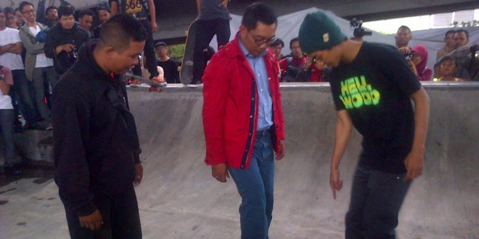

|  |
|
Nasional
Kedekatan Basuki bukan hanya dengan megawati soekarnoputri, tpi juga kader PDI-P lainya seperti maruarar Sirait.
Ditulis Kemarin Pukul 07:46 | Oleh fitria yulistiani | kategori : Berita | Read More | Dibaca : 3582 Kali
Regional
Ketua PMI Pusat M Jusuf Kalla menemui pengungsi erupsi gunung sinabungdi masjid Agung Kabanjahe, Karo, Sumatera Utara, Rabu (8/1/2014)pagi.
Ditulis Kemarin Pukul 07:46 | Oleh fitria yulistiani | kategori : Berita | Read More | Dibaca : 3582 Kali
Regional
Mesi pemukingan warga di Desa Ploso, Kecamatan Karangtengah, Kabupateng Demak, sudah tidak tergenang air, namun akses jalan masuk ke Dukuh kalitageh dan Dukuh Kauman masih sulit dilintasi.
Ditulis Kemarin Pukul 07:46 | Oleh fitria yulistiani | kategori : Berita | Read More | Dibaca : 3582 Kali
Terpopuler